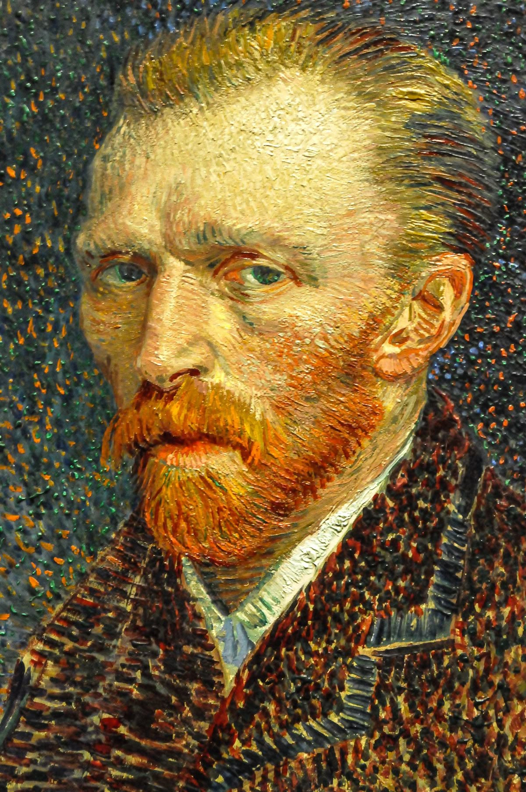

Về Vincent van Gogh

Xem các tác phẩm nổi bật
Vincent Van Gogh (1853-1890) là một họa sĩ tài ba với phong cách nghệ thuật đặc biệt. Ông được đánh giá là một trong những nhân vật nổi tiếng và có tầm ảnh hưởng nhất phương Tây trong thời đại của ông. Tuy nhiên không may ông bị mắc chứng trầm cảm và rối loạn tâm thần từ , cùng với cuộc đời đầy rẫy những sóng gió, ông đã quyết định tự tử và qua đời khi chỉ mới 37 tuổi. Ông sở hữu một số lượng tranh nghệ thuật khổng lồ với đa dạng các chủ đề khác nhau từ tranh phong cảnh, tĩnh vật, chân dung và các tác phẩm nghệ thuật của ông vẫn còn những giá trị nhất định cho tới thời đại hiện nay. Xem thêm về tiểu sử của Van Gogh tại đây